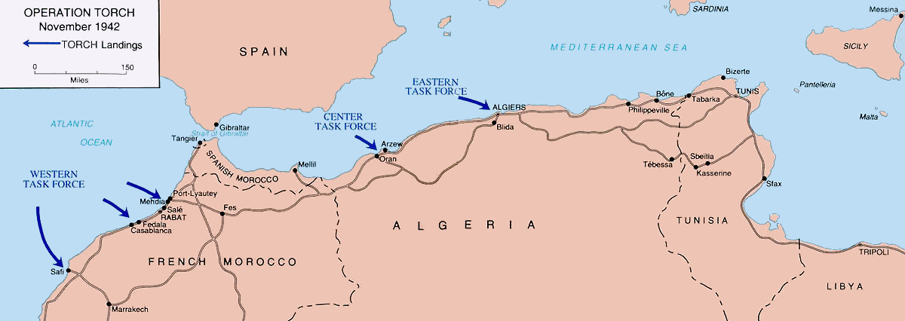

Operación Torch
El primer gran desembarco angloestadounidense de la guerra: la invasión del noroeste de África francés (Marruecos y Argelia), que abrió un segundo frente que atraparía al Eje en el continente africano.
Datos
| Fechas | 8 – 16 de noviembre de 1942 |
|---|---|
| Lugar | Marruecos y Argelia (África del Norte francesa) |
| Resultado | Victoria aliada; las fuerzas de Vichy cesan la resistencia y cambian de bando |
| Bando aliado | Estados Unidos y Reino Unido |
| Defensores iniciales | Fuerzas de la Francia de Vichy |
| Comandantes | Dwight Eisenhower, George Patton (Aliados); François Darlan (Vichy) |
| Consecuencia directa | Alemania ocupa la Francia de Vichy; el Eje queda atrapado entre Torch y el Octavo Ejército |
Bando aliado
Defensores iniciales
Resistencia inicial
Introducción
Mientras el Octavo Ejército británico perseguía a Rommel tras El Alamein, los Aliados abrieron un segundo frente en el otro extremo de África. La Operación Torch fue el debut a gran escala de las tropas estadounidenses en el teatro europeo-mediterráneo y la primera gran operación anfibia conjunta angloestadounidense, dirigida por Dwight Eisenhower.
Razones
- Atrapar al Eje en África: desembarcar en la retaguardia del frente africano para cazar a las fuerzas de Rommel entre dos ejércitos.
- Abrir un frente occidental (por ahora): Estados Unidos y la URSS querían un segundo frente; una invasión de Francia era aún inviable en 1942, así que se optó por el Norte de África.
- Controlar el Mediterráneo: asegurar la navegación y preparar el salto a Sicilia e Italia.
Cuerpo (desarrollo)
El 8 de noviembre, las fuerzas aliadas desembarcaron simultáneamente en tres puntos: Casablanca (Marruecos) y Orán y Argel (Argelia). El territorio estaba en manos de la Francia de Vichy, y no estaba claro si sus tropas resistirían o se unirían a los Aliados.
La resistencia francesa fue desigual: dura en algunos puntos, casi nula en otros. En pocos días, el almirante Darlan, alto cargo de Vichy que se encontraba en Argel, ordenó el alto el fuego a cambio de conservar el mando (el polémico "acuerdo Darlan"). La respuesta alemana fue inmediata: la Wehrmacht ocupó la zona libre de la Francia de Vichy en Europa, y el Eje envió tropas a toda prisa a Túnez para frenar el avance aliado.

Mapa de la Operación Torch (Wikimedia Commons): las tres zonas de desembarco y el avance hacia Túnez. Leyenda original en inglés.
Conclusión
Torch cambió por completo la situación en África. El Eje, perseguido desde el este por Montgomery y amenazado desde el oeste por los ejércitos de Torch, quedó atrapado y se replegó a Túnez, donde libraría su última resistencia en el continente.
- Marcó la entrada masiva de Estados Unidos en la guerra terrestre contra Alemania.
- Provocó la ocupación alemana de toda Francia y el fin de la ficción de una Vichy "independiente".
- La mayor parte del imperio colonial francés en África pasó al bando aliado.
Curiosidades
- El "acuerdo Darlan": pactar con un dirigente de Vichy para acelerar el alto el fuego fue muy criticado; Darlan sería asesinado semanas después.
- El autohundimiento de Tolón: para evitar que su flota cayera en manos alemanas tras la ocupación de Vichy, la marina francesa hundió sus propios barcos en el puerto de Tolón.
- Bautismo de fuego: para la mayoría de las tropas estadounidenses, Torch fue su primer combate de la guerra.
Teorías
Debates e interpretaciones historiográficas, presentados como tales:
- ¿África en lugar de Francia? Se debate largamente si la decisión de invadir el Norte de África en 1942 —defendida por Churchill— retrasó de forma útil o innecesaria el desembarco en Francia, que algunos mandos estadounidenses querían antes.
- El pacto con Vichy: se discute la moralidad y la utilidad de negociar con Darlan, un colaboracionista, para salvar vidas aliadas.